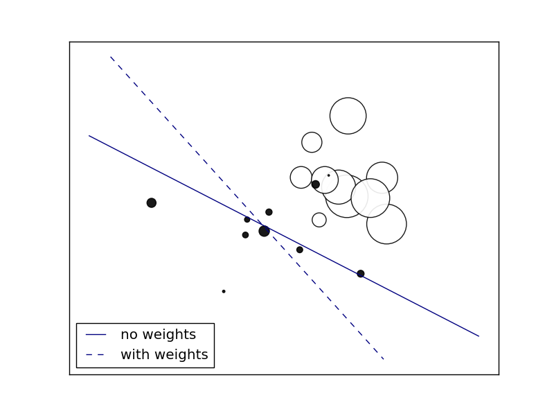

Plot decision function of a weighted dataset, where the size of points is proportional to its weight.
Adapted from scikit-learn’s plot_sgd_weighted_samples.py
Python source code: plot_sample_weight.py
print(__doc__)
import numpy as np
import matplotlib.pyplot as plt
from lightning.impl.sag import SAGAClassifier
# we create 20 points
np.random.seed(0)
X = np.r_[np.random.randn(10, 2) + [1, 1], np.random.randn(10, 2)]
y = np.array([1] * 10 + [-1] * 10)
sample_weight = 100 * np.abs(np.random.randn(20))
# and assign a bigger weight to the last 10 samples
sample_weight[:10] *= 10
# plot the weighted data points
xx, yy = np.meshgrid(np.linspace(-4, 5, 500), np.linspace(-4, 5, 500))
plt.figure()
plt.scatter(X[:, 0], X[:, 1], c=y, s=sample_weight, alpha=0.9,
cmap=plt.cm.bone)
# fit the unweighted model
clf = SAGAClassifier(alpha=0.01, loss='log')
clf.fit(X, y)
Z = clf.decision_function(np.c_[xx.ravel(), yy.ravel()])
Z = Z.reshape(xx.shape)
no_weights = plt.contour(xx, yy, Z, levels=[0], linestyles=['solid'])
# fit the weighted model
clf = SAGAClassifier(alpha=0.01, loss='log')
clf.fit(X, y, sample_weight=sample_weight)
Z = clf.decision_function(np.c_[xx.ravel(), yy.ravel()])
Z = Z.reshape(xx.shape)
samples_weights = plt.contour(xx, yy, Z, levels=[0], linestyles=['dashed'])
plt.legend([no_weights.collections[0], samples_weights.collections[0]],
["no weights", "with weights"], loc="lower left")
plt.xticks(())
plt.yticks(())
plt.show()
Total running time of the example: 0.08 seconds ( 0 minutes 0.08 seconds)